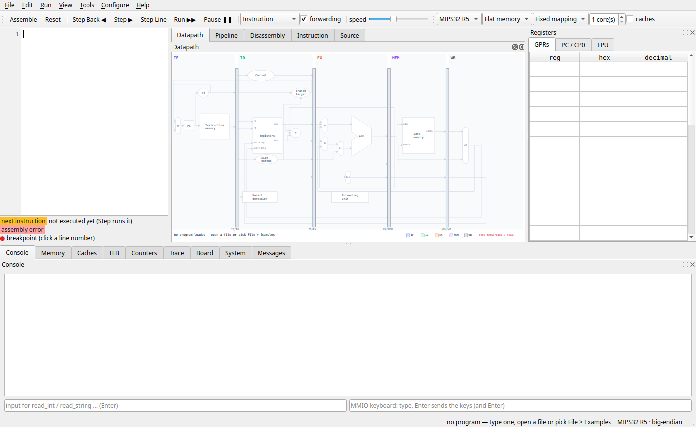
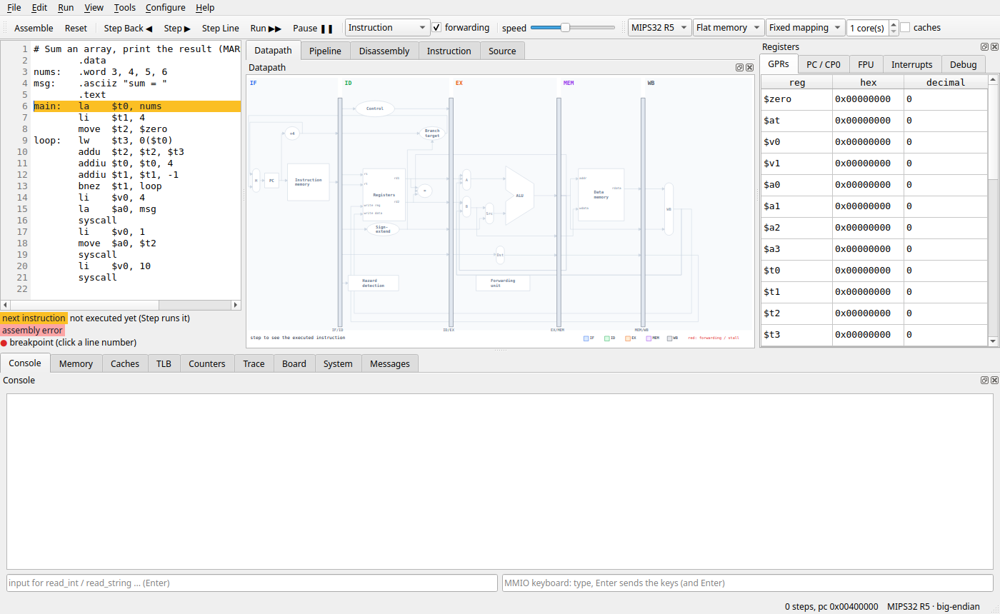
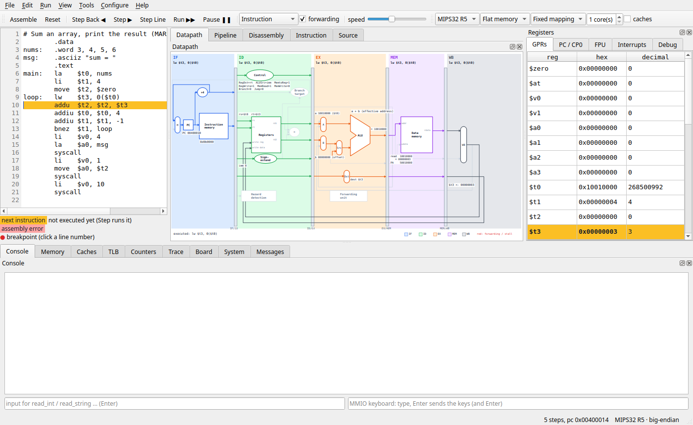
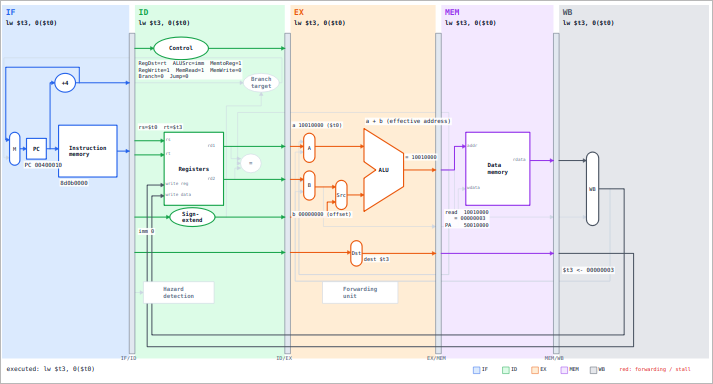
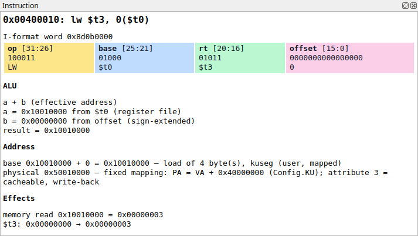
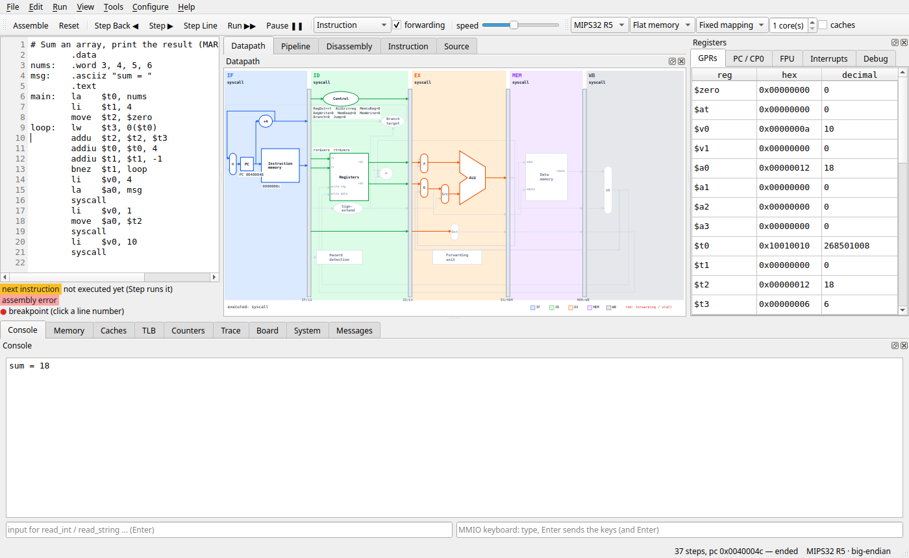
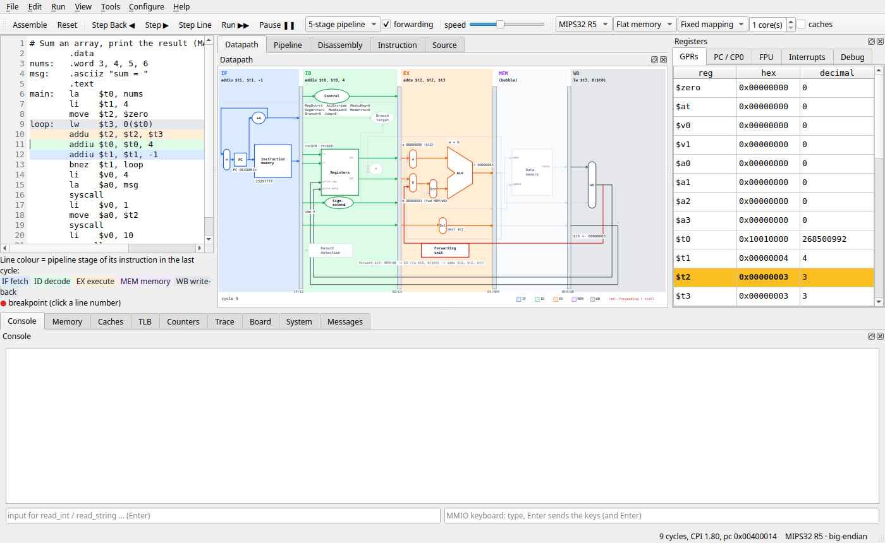
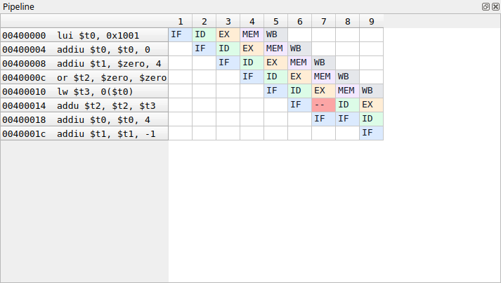

Phase 1 — Getting started
This phase gets eMIPS running on your computer and walks you through a first program, once in the graphical window and once in the terminal. It takes about fifteen minutes.
- 1.1 What eMIPS is
- 1.2 What you need
- 1.3 Installing
- 1.4 Starting eMIPS
- 1.5 A first program in the window
- 1.6 The same program in the 5-stage pipeline
- 1.7 A first program in the terminal
- 1.8 Writing your own program
- 1.9 Keys worth remembering
1.1 What eMIPS is
eMIPS simulates a MIPS32 processor — the architecture used in most computer-architecture courses (Patterson & Hennessy). It:
- assembles your
.asmprogram (MARS / SPIM / GNU syntax), or loads machine code from an Intel HEX file and disassembles it; - runs it on a model that behaves like a real MIPS32 core: all 32 registers, HI / LO, the floating-point unit, coprocessor 0 (exceptions, interrupts, the timer), branch delay slots, big- or little-endian memory, and every MIPS32 release from R1 to R6;
- shows what happens inside: the bit fields of each instruction, the ALU's inputs and result, the memory address, and the classic 5-stage pipeline (IF, ID, EX, MEM, WB) with its forwarding paths and stalls.
The reference is real MIPS: where a simpler simulator would take a shortcut, eMIPS does what the MIPS32 manuals say a processor does. When your program works in eMIPS it works on MIPS.
You can use it two ways — a window (the GUI) or the terminal (the CLI). Both run the same engine and behave identically.
1.2 What you need
- Python 3.10 or newer (
python3 --versiontells you). - For the window: PyQt6 (or PySide6 — either works).
- The eMIPS files (the repository).
Nothing else: the simulator itself needs no other packages.
1.3 Installing
First get the files (or download the ZIP from the GitHub page and unpack it):
git clone https://github.com/protektwar/eMIPS.git
cd eMIPS
Then choose one of three ways. (On Windows type py where this guide
says python3.)
Option A — use it straight from the repository
The simplest way: no installation step at all. The terminal commands work right away; for the window, add Qt for Python once from your system's packages:
| System | Command |
|---|---|
| Debian / Ubuntu / Mint | sudo apt install python3-pyqt6 |
| Fedora | sudo dnf install python3-pyqt6 |
| Arch / Manjaro | sudo pacman -S python-pyqt6 |
Run every python3 -m emips ... command from inside the eMIPS folder.
Option B — install it in a virtual environment
Why not just pip install? Most Linux distributions do not let pip
change the system's Python: it stops with error:
externally-managed-environment, so that pip and the system's packages
never fight over the same files. A virtual environment is a private
Python folder where pip may install anything — and the usual way on macOS
and Windows too:
python3 -m venv .venv # Debian / Ubuntu: sudo apt install python3-venv first
source .venv/bin/activate # Windows: .venv\Scripts\activate
pip install ".[gui]" # eMIPS + PyQt6
This gives you the commands emips-gui (the window) and emips (the
same as python3 -m emips), from any folder — while the environment is
active: activate it again (source .venv/bin/activate) in every new
terminal. If your system already has PyQt6, python3 -m venv
--system-site-packages .venv lets the environment use it. If you change
eMIPS's code, pip install -e ".[gui]" (an editable install) follows
your edits.
Option C — install it as an application (pipx)
pipx makes the environment for you and puts the commands on your path:
pipx install ".[gui]" # Debian / Ubuntu: sudo apt install pipx
emips-gui
Check that it works
python3 -m emips --help
lists the commands: asm, dis, run, pipe, debug, gui.
Licence note. PyQt6 is licensed GPL v3 (or commercially); PySide6 is LGPL. eMIPS works with either — install the one that suits you.
1.4 Starting eMIPS
| What | Command |
|---|---|
| The window, empty | python3 -m emips gui (or emips-gui) |
| The window with a program | python3 -m emips gui myprog.asm |
| The window with machine code | python3 -m emips gui myprog.hex |
| Run a program in the terminal | python3 -m emips run myprog.asm |
| The terminal debugger | python3 -m emips debug myprog.asm |
The window starts empty unless you name a file. A file that cannot be opened is reported in the Messages pane and the window starts empty.
The example programs used in this guide live in the folder
emips/gui/examples/ and are also in the window's
File → Examples menu.
1.5 A first program in the window
Start the window:
python3 -m emips gui

The window has:
- the menu bar (File, Edit, Run, View, Tools, Configure, Help) and, under it, the toolbar with the run controls: Assemble, Reset, Step Back, Step, Run, Pause, the mode (Instruction or 5-stage pipeline), forwarding and the run speed;
- the editor on the left, with a colour legend under it;
- in the middle, the Datapath, Pipeline, Disassembly and Instruction tabs;
- on the right, the Registers;
- at the bottom, the Console (what the program prints and reads), Memory and Messages;
- the status bar at the very bottom: steps (or cycles), the PC, and the MIPS32 release and byte order in use.
Every pane can be moved, tabbed together with another or pulled out into its own window by dragging its title. View → Reset Layout puts everything back.
Load the example
Choose File → Examples → Sum of an array (loop, load, syscalls).

The program adds the four numbers stored at nums and prints the result:
.data
nums: .word 3, 4, 5, 6 # four 32-bit numbers in memory
msg: .asciiz "sum = " # a text, ending with a 0 byte
.text
main: la $t0, nums # $t0 = address of nums
li $t1, 4 # $t1 = how many numbers are left
move $t2, $zero # $t2 = the sum, starts at 0
loop: lw $t3, 0($t0) # $t3 = the number at $t0
addu $t2, $t2, $t3 # add it to the sum
addiu $t0, $t0, 4 # next number (4 bytes further)
addiu $t1, $t1, -1 # one less left
bnez $t1, loop # more left? go round again
li $v0, 4 # print_string(msg)
la $a0, msg
syscall
li $v0, 1 # print_int($t2)
move $a0, $t2
syscall
li $v0, 10 # exit
syscall
Loading an example assembles it at once. The amber line
(line 6, la $t0, nums) is the next instruction to execute — it has
not run yet. The Disassembly tab shows the machine words the assembler
produced; you will notice that la became two instructions (lui
and addiu): it is a pseudo-instruction, a convenience the assembler
expands (Phase 2 explains them all).
Step through it
Press Step (or F10) five times. Each press executes one machine instruction:
lui $t0, 0x1001— first half oflaaddiu $t0, $t0, 0— second half:$t0= 0x10010000, the address ofnumsaddiu $t1, $zero, 4— that isli $t1, 4or $t2, $zero, $zero— that ismove $t2, $zerolw $t3, 0($t0)— loads the first number, 3

Look at:
- the editor: the amber line moved to line 10 —
adduis next; - the Registers: the register the last instruction changed (
$t3 = 3) is highlighted; - the Datapath: the instruction just executed (
lw $t3, 0($t0)) is drawn going through all five stages, with its values on the wires — the PC, the instruction word8d0b0000, the registers read, the ALU adding the base address and the offset, the memory read and the register written back;

- the Instruction tab: the instruction taken apart — its bit fields (op, base, rt, offset), what the ALU did and where the operands came from, the address it accessed, and its effects.

Hover the mouse over any part of the datapath for a short explanation of what it does.
Step Back (Shift+F10) undoes a step — try it, then step forward again. You can go back as far as the start.
Run it to the end
Press Run (F5). The program runs (the speed slider sets how fast) and stops when it exits:

The Console shows sum = 18, $t2 holds 18 (0x12), and the status
bar says 37 steps — ended. Reset (Ctrl+R) starts the program
again from the beginning.
Breakpoints
Click the number 9 in the editor's margin: a red dot appears — a
breakpoint on loop: lw .... Press Reset, then Run: the
program stops each time it reaches line 9, so you can watch $t2 grow
(0, 3, 7, 12) by pressing Run again. Click the dot to remove it.
(F9 sets or clears a breakpoint on the line the cursor is on.)
1.6 The same program in the 5-stage pipeline
So far each Step executed one whole instruction. A real MIPS processor overlaps five instructions at a time, each in a different stage:
| Stage | What happens |
|---|---|
| IF — fetch | read the instruction at the PC from memory |
| ID — decode | decode it, read its registers; branches decide here |
| EX — execute | the ALU computes (a result, or a memory address) |
| MEM — memory | loads read and stores write data memory |
| WB — write back | the result is written into the register file |
Set the toolbar mode to 5-stage pipeline (the program restarts) and press Step nine times. Now each step is one clock cycle:

- the editor colours each line by the stage its instruction is in (the legend under the editor names the colours);
- the Datapath shows five different instructions at once, one per
stage. At cycle 9 the
addu $t2, $t2, $t3in EX needs$t3, which thelwin WB has only just loaded — the value is forwarded to the ALU (the red wire, fwd MEM/WB), and the (bubble) in MEM is the stall cycle the load cost one cycle earlier; - the status bar shows the cycle count and the CPI (cycles per instruction — 1.0 would be a perfect pipeline).
Open the Pipeline tab for the classic chart — one row per
instruction, one column per cycle; -- marks a cycle stalled in ID:

Untick forwarding in the toolbar and run the program again: without
forwarding every dependent instruction waits for the write-back, the
chart fills with --, and the CPI goes up. Phase 5 explains all of
this.
1.7 A first program in the terminal
Everything also works without the window. Run the same example:
$ python3 -m emips run emips/gui/examples/sum_array.asm
sum = 18
--- 37 steps, pc = 0x0040004c, 37 cycles (exited)
$zero 0x00000000 $at 0x00000000 $v0 0x0000000a $v1 0x00000000
$a0 0x00000012 $a1 0x00000000 $a2 0x00000000 $a3 0x00000000
$t0 0x10010010 $t1 0x00000000 $t2 0x00000012 $t3 0x00000006
...
pc 0x0040004c hi 0x00000000 lo 0x00000000
The program's output comes first, then the final state of the registers.
If a program reads input (read_int ...), type it in the terminal.
For a closer look, start the debugger and type commands at its
(emips) prompt:
$ python3 -m emips debug emips/gui/examples/sum_array.asm
eMIPS debugger — MIPS32 R5, big-endian, instruction mode. Type help.
=> 0x00400000 lui $t0, 0x1001 line 6: main: la $t0, nums
(emips) break loop
breakpoint at 0x00400010 lw $t3, 0($t0) line 9: loop: lw $t3, 0($t0)
(emips) continue
breakpoint
0x0040000c or $t2, $zero, $zero
=> 0x00400010 lw $t3, 0($t0) line 9: loop: lw $t3, 0($t0)
(emips) step
0x00400010 lw $t3, 0($t0) ; $t3 = 0x00000003
=> 0x00400014 addu $t2, $t2, $t3 line 10: addu $t2, $t2, $t3
(emips) regs $t2 $t3
$t2 = 0x00000000 0
$t3 = 0x00000003 3 *
(emips) delete all
all breakpoints deleted
(emips) continue
sum = 18
the program exited
0x00400048 syscall
(ended)
(emips) quit
=>marks the next instruction; the line above it is the instruction just executed and what it changed. Inregs,*marks a register the last step changed.break loopuses the label;break 9(a line number) andbreak 0x00400010(an address) do the same.helplists every command;help stepexplains one.
Phase 4 covers the terminal completely.
1.8 Writing your own program
- File → New (Ctrl+N) — an empty editor.
- Type a program. The smallest complete one:
.text main: li $a0, 42 # the number to print li $v0, 1 # service 1: print_int syscall li $v0, 10 # service 10: exit syscall - Assemble (Ctrl+B). If there is a mistake, the line turns red and
the Messages pane says what is wrong, e.g.
line 2: unknown instruction 'lii'. (You do not have to assemble before every run: by default Step and Run assemble again by themselves when you changed the text.) - Run (F5) — the Console shows
42. - File → Save (Ctrl+S) — name it
something.asm.
Always end a program with the exit system call (li $v0, 10 +
syscall). Without it the processor goes on fetching past your last
instruction, finds no code there and stops with a message saying exactly
that.
1.9 Keys worth remembering
| Key | Action |
|---|---|
| Ctrl+B | Assemble |
| F10 | Step (one instruction, or one cycle in pipeline mode) |
| Shift+F10 | Step back |
| F5 / F6 | Run / Pause |
| Ctrl+F10 | Run to the line the cursor is on |
| F9 | Breakpoint on / off at the cursor line |
| Ctrl+R | Reset (restart the program) |
| Ctrl+N / Ctrl+O / Ctrl+S | New / Open / Save |
| F1 | Help → User Guide (this guide) |
Help → Keyboard Shortcuts shows them all.